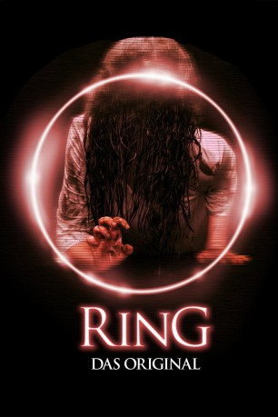
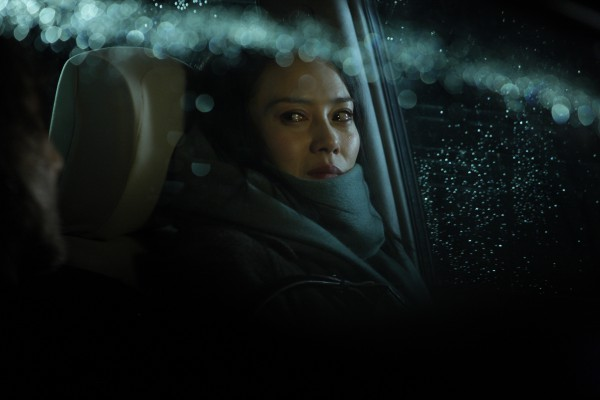
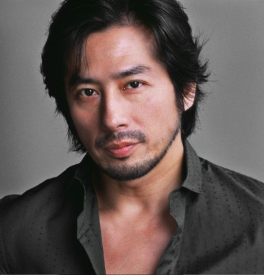
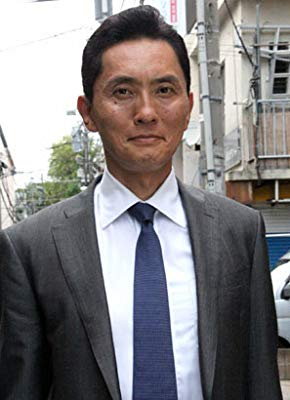

#1197 Ring - Das Original
Alternativ: Ring (Englischer Titel)
 
 IMDB-Wertung: 7.3 / 10
IMDB-Wertung: 7.3 / 10  Metascore: 0
Metascore: 0 
In japanischen Schülerkreisen kursiert die Legende von einem geheimnisvollen Videoband, dessen Genuss genau eine Woche später zum unvermeidlichen Ableben des Betrachters führt. Nach dem von rätselhaften Umständen begleiteten Tod ihrer schulpflichtigen Cousine beschließt Zeitungsreporterin Keiko im Angesicht neuer Gerüchte, die Angelegenheit zum Gegenstand einer Story zu machen. Als sie dabei selbst in Besitz des Tapes gerät, beginnt auch für sie die Uhr zu ticken. Gemeinsam mit Ex-Mann Ryuji bricht sie auf, das Geheimnis vor Ablauf der Woche zu lüften...
Jahr: 1998
Dauer: 96 Minuten
FSK: 16
Land: Japan Studio: Anolis EntertainmentTonspuren:
Untertitel: Deutsch,
Auflösung: 720p (1280x696) Größe: 3205 MB
Genre: Horror, Mystery
Regisseur: Hideo Nakata
Drehbuch: Hiroshi Takahashi, Kôji Suzuki
Soundtrack: Kenji Kawai
Darsteller:
- Nanako Matsushima als Reiko Asakawa
-  Miki Nakatani als Mai Takano
- Yûko Takeuchi als Tomoko Ôishi
-  Hiroyuki Sanada als Ryûji Takayama
- Hitomi Satô als Masami
- Yôichi Numata als Takashi Yamamura
-  Yutaka Matsushige als Yoshino
- Katsumi Muramatsu als Kôichi Asakawa
- Rikiya Ôtaka als Yôichi Asakawa
- Masako als Shizuko Yamamura
- Daisuke Ban als Heihachirô Ikuma
- Hiroshi Sakuma als Komiya Kameraman
- Yûrei Yanagi als AD Okazaki
- Yôko Ohshima als Reiko no Oba
- Kiriko Shimizu als Yoshimi Ôishi
- Makoto Kakeda als Kanrinin
- Rie Ino'o als Sadako Yamamura
- Hiroyuki Tanabe als Hayatsu
- Miwako Kaji als Kazue Yamamura
- Yôko Honma als Chûgakusei A
- Asami Nagata als Chûgakusei B
- Yukiko Shimodaira als Chûgakusei C
- Keiko Yoshida als Kôkôsei A
- Yoshiko Matsumaru als Kôkôsei B
- Ayumu Naose als Kôkôsei C
- Maki Ikeda als Yôko Tsuji
- Takashi Takayama als Takehiko Nômi
- Chihiro Shirai als Sadako as a Young Girl
- Toshihiko Takeda als Seinen Jidai no Yamamura
- Mantarô Koichi als Kôkaidô no Shikôyaku
- Shin'ichi Noda als Kisha Daihyô A
- Shigefumi Nakai als Kisha Daihyô B
- Yûki Takahata als
- Mutsuko Ôshima als
- Taku Kobayashi als
- Hiromi Murata als
- Kazuhiro Yokoyama als
- Mizuho Kinoshita als
- Toshinori Yoshino als
- Asami Ishikawa als
Datei: X:\HD-Eastern-Collections\Ringu\Ring - Das Original (1998, FSK16, 1280x696).mkv seit 02.06.2015
Festplatte: HD Eastern+Western
 Es gibt insgesamt 9 Filme in der Gruppe 'HD-Eastern-Collections\Ringu'
Es gibt insgesamt 9 Filme in der Gruppe 'HD-Eastern-Collections\Ringu'